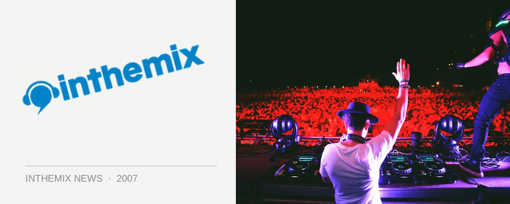

Katalyst tells the country ‘What’s Happening’! Presented by inthemix
With his long-awaited followup album What’s Happening finally in the stores and turning heads with its sublime fusion of hip hop, funk, soul, rock and whatever else (and snatching this week’s ITM ‘Editor’s Pick’ spot, no less), Katalyst will be taking it across the country with a massive entourage of guest vocalists!
Reflecting some of the top-class talent that features on the album, some of the international vocalists that Katalyst will be bringing along for the ride will include NY-based MC J-Live, Bronx soul singer Stephanie McKay for her first ever Australian tour and Steve Spacek from the UK who’s been dubbed as by Giles Peterson from BBC1 as ‘the voice of modern soul’.
But that’s not all… There’ll also be a range of quality local stars on the bill including Adalita from Magic Dirt, Australian/Jamaican MC Ru C.L. from Melbourne, Hau from hip hop duo Koolism as well as former George frontwoman Katie Noonan in some states.
Behind the instruments will be Katalyst on the MPC, desk and effects, industry veteran Stu Hunter and Leeroy Brown on the turntables. So much more than just your standard gig, as you can see it’s gonna be bigger than big!
Catch Katalyst and the crew at the following dates across the country! Proudly presented by inthemix, tickets on sale now.
Fri 16th Nov:The Prince Of Wales, Melbourne
Sat 17th Nov: The Gaelic Club, Sydney
Thurs 22nd Nov: The Governor HindmarshAdelaide
Fri 23rd Nov: The Rosemount, Perth
Sat 24 Nov: The Zoo, Brisbane
Meanwhile, check out the clip for his latest singer below featuring none other than Bronx soul singer Stephanie McKay who will be flying in for the tour!